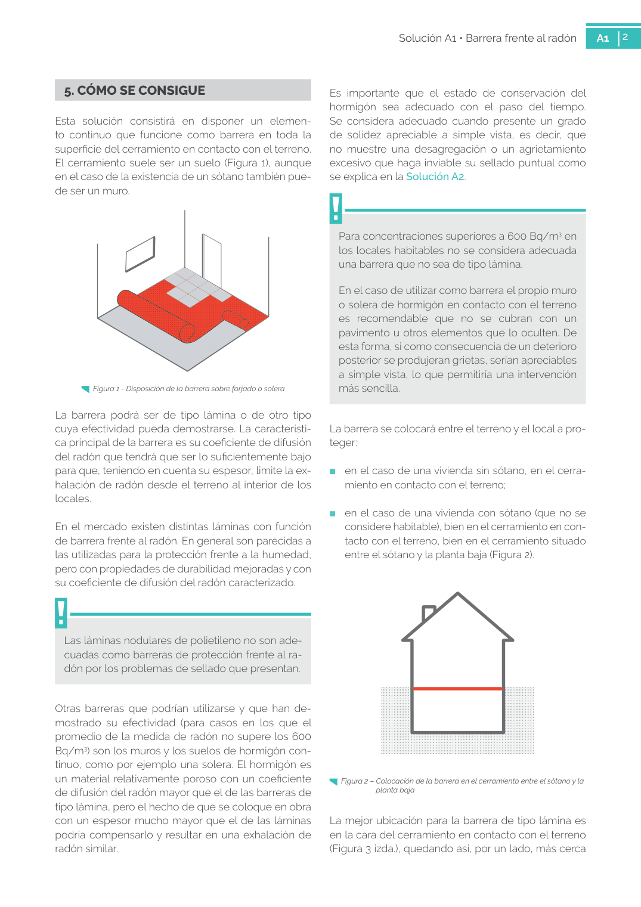

<!doctype html>
<html lang="es"><head><meta charset="utf-8">
<meta name="viewport" content="width=device-width, initial-scale=1">
<title>GUIA · 5. CÓMO SE CONSIGUE</title><link rel="stylesheet" href="../estilo.css">
</head><body>
<nav><a href="../index.html">Índice</a> › <a href="../doc/guia-pdf-d97e92f2f27e-sin-fecha-1e18ef06574e.html">GUIA</a> › 5</nav>

<header class="meta">
<p><a href="../doc/guia-pdf-d97e92f2f27e-sin-fecha-1e18ef06574e.html">GUIA</a> · 5. CÓMO SE CONSIGUE · versión sin-fecha · capa guia</p>
</header>
<div class="cita"><strong>Cita:</strong> GUIA · 5 · 5. CÓMO SE CONSIGUE · páginas físicas pág. 2-3 (impresas: ['2', '3'])</div>
<p>Formatos: <a href="../../contenido/docs/GUIA-PDF-d97e92f2f27e/sin-fecha__1e18ef06574e/apartado/a0007__5-como-se-consigue.json">JSON compacto</a> · <a href="../../contenido/docs/GUIA-PDF-d97e92f2f27e/sin-fecha__1e18ef06574e/apartado/a0007__5-como-se-consigue.md">Markdown</a> · <a href="../../contenido/docs/GUIA-PDF-d97e92f2f27e/sin-fecha__1e18ef06574e/fuente.pdf">PDF fuente</a></p>
<p><a href="../doc/guia-pdf-d97e92f2f27e-sin-fecha-1e18ef06574e.html">Ámbito del documento</a> · <a href="../doc/guia-pdf-d97e92f2f27e-sin-fecha-1e18ef06574e.html#ambito">texto del ámbito</a> ·
<a href="../doc/guia-pdf-d97e92f2f27e-sin-fecha-1e18ef06574e.html">documento y tablas</a></p>
<nav><a href="guia-pdf-d97e92f2f27e-sin-fecha-1e18ef06574e__a0006.html">← 2. CUÁNDO SE UTILIZA</a> <a href="guia-pdf-d97e92f2f27e-sin-fecha-1e18ef06574e__a0008.html">6. PUNTOS CRÍTICOS →</a></nav>
<h1>5 5. CÓMO SE CONSIGUE</h1>
<p>Tipo: tablas, figuras · nivel 1 · sección estimada: 5. CÓMO SE CONSIGUE · padre: </p>
<pre class="literal">5. CÓMO SE CONSIGUE
Esta solución consistirá en disponer un elemen­
to continuo que funcione como barrera en toda la
superficie del cerramiento en contacto con el terreno.
El cerramiento suele ser un suelo (Figura 1), aunque
en el caso de la existencia de un sótano también pue­
de ser un muro.
Figura 1 - Disposición de la barrera sobre forjado o solera
La barrera podrá ser de tipo lámina o de otro tipo
cuya efectividad pueda demostrarse. La característi­
ca principal de la barrera es su coeficiente de difusión
del radón que tendrá que ser lo suficientemente bajo
para que, teniendo en cuenta su espesor, limite la ex­
halación de radón desde el terreno al interior de los
locales.
En el mercado existen distintas láminas con función
de barrera frente al radón. En general son parecidas a
las utilizadas para la protección frente a la humedad,
pero con propiedades de durabilidad mejoradas y con
su coeficiente de difusión del radón caracterizado.
Las láminas nodulares de polietileno no son ade­
cuadas como barreras de protección frente al ra­
dón por los problemas de sellado que presentan.
Otras barreras que podrían utilizarse y que han de­
mostrado su efectividad (para casos en los que el
promedio de la medida de radón no supere los 600
Bq/m3) son los muros y los suelos de hormigón con­
tinuo, como por ejemplo una solera. El hormigón es
un material relativamente poroso con un coeficiente
de difusión del radón mayor que el de las barreras de
tipo lámina, pero el hecho de que se coloque en obra
con un espesor mucho mayor que el de las láminas
podría compensarlo y resultar en una exhalación de
radón similar.
Es importante que el estado de conservación del
hormigón sea adecuado con el paso del tiempo.
Se considera adecuado cuando presente un grado
de solidez apreciable a simple vista, es decir, que
no muestre una desagregación o un agrietamiento
excesivo que haga inviable su sellado puntual como
se explica en la Solución A2.
Para concentraciones superiores a 600 Bq/m3 en
los locales habitables no se considera adecuada
una barrera que no sea de tipo lámina.
En el caso de utilizar como barrera el propio muro
o solera de hormigón en contacto con el terreno
es recomendable que no se cubran con un
pavimento u otros elementos que lo oculten. De
esta forma, si como consecuencia de un deterioro
posterior se produjeran grietas, serían apreciables
a simple vista, lo que permitiría una intervención
más sencilla.
La barrera se colocará entre el terreno y el local a pro­
teger:
■
en el caso de una vivienda sin sótano, en el cerra­
miento en contacto con el terreno;
■
en el caso de una vivienda con sótano (que no se
considere habitable), bien en el cerramiento en con­
tacto con el terreno, bien en el cerramiento situado
entre el sótano y la planta baja (Figura 2).
Figura 2 – Colocación de la barrera en el cerramiento entre el sótano y la
planta baja
La mejor ubicación para la barrera de tipo lámina es
en la cara del cerramiento en contacto con el terreno
(Figura 3 izda.), quedando así, por un lado, más cerca

3
Solución A1 • Barrera frente al radón
A1
3
de la fuente de radón y, por otro, protegida de posibles
impactos u otras acciones que la puedan deteriorar du­
rante el uso del edificio. Sin embargo, esto no siempre
es posible por lo que, según las circunstancias con­
cretas de cada intervención la barrera se podrá situar:
■
en el caso de que se vaya a mantener la solera o el
forjado existente, en la cara interior (Figura 3 centro
y drcha.), aunque en el caso de forjados existentes
de madera, se situará sobre el terreno;
■
en el caso de que se vaya a mantener el muro de
sótano existente, en la cara interior.</pre>
<h2>Tablas en estas páginas</h2><ul><li>p. 2 · <a href="../../contenido/docs/GUIA-PDF-d97e92f2f27e/sin-fecha__1e18ef06574e/tabla/p0002_t01.json">p0002_t01.json</a> · <a href="../../contenido/docs/GUIA-PDF-d97e92f2f27e/sin-fecha__1e18ef06574e/tabla/p0002_t01.csv">.csv</a></li><li>p. 3 · <a href="../../contenido/docs/GUIA-PDF-d97e92f2f27e/sin-fecha__1e18ef06574e/tabla/p0003_t01.json">p0003_t01.json</a> · <a href="../../contenido/docs/GUIA-PDF-d97e92f2f27e/sin-fecha__1e18ef06574e/tabla/p0003_t01.csv">.csv</a></li></ul><h2>Página visual</h2><figure><a href="../../contenido/docs/GUIA-PDF-d97e92f2f27e/sin-fecha__1e18ef06574e/figura/p0002.png"></a><figcaption>Página visual 2 (fuente para fórmulas/tablas/figuras)</figcaption></figure><figure><a href="../../contenido/docs/GUIA-PDF-d97e92f2f27e/sin-fecha__1e18ef06574e/figura/p0003.png"></a><figcaption>Página visual 3 (fuente para fórmulas/tablas/figuras)</figcaption></figure><p class="aviso">PDF fuente redistribuible: copia fiel enlazada en esta página (SHA256 verificado).</p>
<footer>Generado estáticamente desde JSON normalizado; sin JavaScript ni servicios externos.
El JSON es la fuente; este HTML es caché reproducible.</footer>
</body></html>
